Как получить данные из Google Analytics в R и загрузить в Power BI
В предыдущих статьях я неоднократно упоминал, что Google Analytics — отличный инструмент для сбора данных о посещениях сайта, но в плане визуализации данных, на мой взгляд, далеко не самый удачный вариант. Именно поэтому ранее я уже писал статьи о сборе и визуализации данных с помощью Google Analytics в Excel, Google Spreadsheets и Google Data Studio.

В этой статье расскажу, как получить и обработать данные из Google Analytics с помощью языка R, а также в качестве бонуса в конце статьи опишу, как использовать эти скрипты для загрузки данных в Microsoft Power BI и получить больше возможностей по сравнению с тем, что предоставляет встроенный коннектор Google Analytics.
Преимущества пакета RGA для работы с Google Analytics API
- Снижение (а в большинстве случаев и обход) семплирования данных.
- Загрузка полного объема данных без ограничений в 100 000 строк на 1 запрос.
- Поддержка работы не только с Core API, но так же и с Multi-Channel Funnels Reporting API и Real Time Reporting API.
Установка пакета RGA
Установить пакет RGA можно как из основного репозитория CRAN, так и непосредственно из репозитория автора пакета Артема Клевцова на GitHub.
Для установки пакета из репозитория CRAN воспользуйтесь командой:
install.packages("RGA")
Для установки пакета из GitHub предварительно установите пакет devtools. Затем с помощью команды install_github установите актуальную версию пакета.
install_github("RGA")
После установки подключите пакет RGA с помощью команды:
library("RGA")
Аутентификация в Google Analytics
Для прохождения процесса аутентификации в Google Analytics в пакете RGA предназначена функция authorize. Функция требует учетных данных, созданных в Google Cloud Platform.
-
Перейдите на своем Google-аккаунте в консоль Google Cloud Platform.
-
В основном меню выберите «Диспетчер API» и нажмите «Учетные данные».
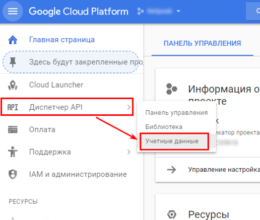
- Нажмите «Создать учетные данные» и затем «Идентификатор клиента OAuth».
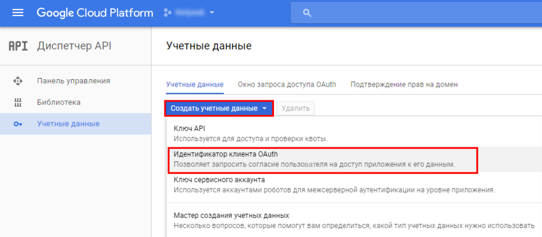
- Выберите тип приложения «Другие», укажите название приложения и нажмите «Создать».
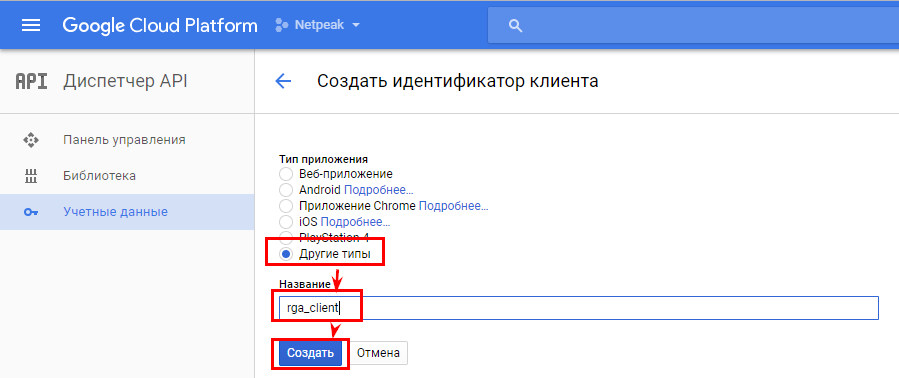
- Появится диалоговое окно «Клиент OAuth» с вашими учетными данными.
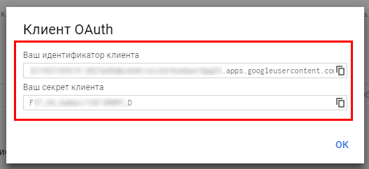
Чтобы пройти процесс аутентификации с помощью функции authorize, укажите в качестве ее аргументов полученные учетные данные.
client.id — ваш идентификатор клиента.
client.secret — ваш секрет клиента.
rga_auth <- authorize(client.id = "Ваш идентификатор клиента", client.secret = "Ваш секрет клиента")
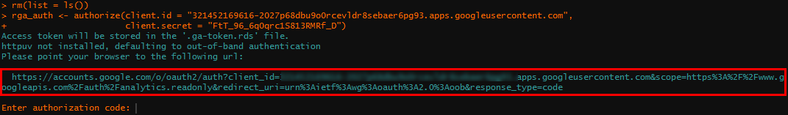
После запуска команды в консоле появится URL-адрес. Откройте его в браузере для завершения процесса аутентификации.
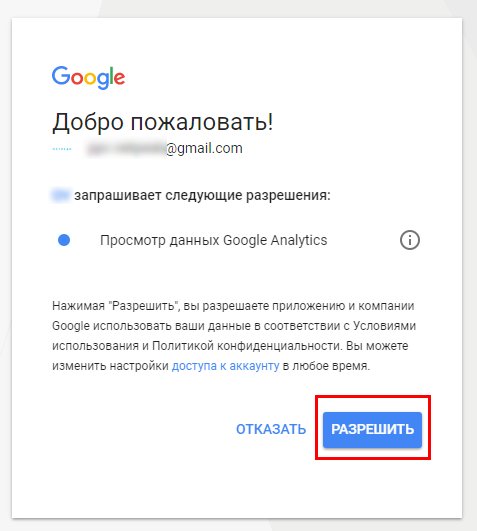
После предоставления доступа к данным система сгенерирует авторизационный код для предварительно созданного пользователя в браузере.
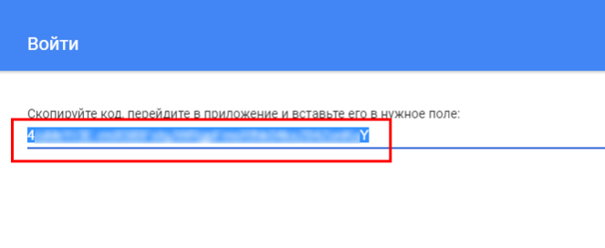
Вставьте код в консоль R на запрос «Enter authorization code:».
Как получить список доступных Google Analytics аккаунтов, ресурсов и представлений с их различными свойствами, настройками и параметрами в R
Воспользуйтесь одной из функций в пакете RGA:
- list_accounts для получения списка аккаунтов. Единственный обязательный аргумент функции — token, в который необходимо передать полученные ранее учетные данные, сохраненные в объект rga_auth.
ruby
accs <- list_accounts(token = rga_auth)
- list_webproperties для списка доступных ресурсов с различными параметрами. Аналогично с предыдущим примером передайте в tokenполученные ранее учетные данные. С помощью аргумента accountIdможно указать ID конкретного аккаунта, из которого вы планируете получить список доступных ресурсов. По умолчанию установлено значение “~all”, что означает получить все доступные ресурсы.
ruby
prop <- list_webproperties(token = rga_auth)
- list_profiles для списка доступных представлений с их различными настройками и параметрами.Token, как и прежде, обязательный аргумент фукции. С помощью аргументов accountIdи webPropertyId можно указать определенный аккаунт или ресурс, из которого вы планируете получить список представлений. По умолчанию оба аргумента равны “~all”.
ruby
views <- list_profiles(token = rga_auth)
Как получить данные из Core API Google Analytics в R
Core API, на мой взгляд, самый используемый API-сервис из доступных в Google Analytics.
Из официальной документации:
Core Reporting API обеспечивает доступ к данным большинства отчетов Google Analytics и позволяет:
- создавать специальные сводки для просмотра данных Google Analytics data.
- автоматизировать работу со сложными отчетами;
- использовать данные Google Analytics в других бизнес-приложениях.
Для работы с Core API в пакете RGA представлена функция get_ga().
Аргументы функции get_ga:
-
profileId — ID представления Google Analytics, из которого необходимо получить данные (пример: “ga:0000000000”), найти ID представления также можно в интерфейсе Google Analytics. Перейдите в панель «Администратор» и нажмите «Настройки представления».
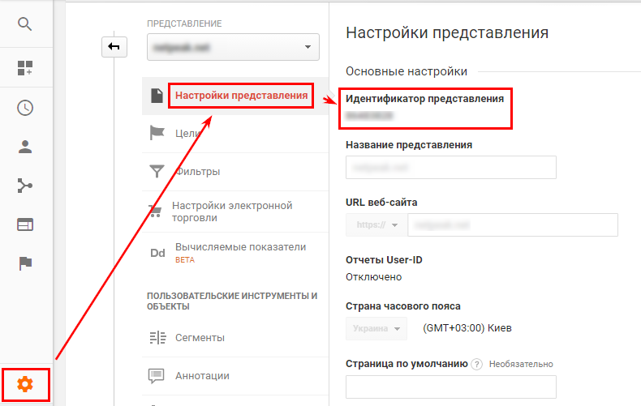
-
start.date — начальная дата в формате ГГГГ-ММ-ДД, данный аргумент так же принимает относительные значения даты («today», «yesterday», or «7daysAgo»), значение по умолчанию «7daysAgo»;
- end.date — конечная дата в формате ГГГГ-ММ-ДД, данный аргумент так же принимает относительные значения даты («today», «yesterday», or «7daysAgo»), значение по умолчанию «7daysAgo»;
- metrics — список показателей через запятую, в одном запросе допускается не более 10 показателей. Пример:
ruby
"ga:sessions,ga:impressions,ga:adCost,ga:transactions”
Все доступные в Core API показатели и допустимые сочетания показателей указаны в справке Google Analytics; - dimensions — список параметров, перечисленных через запятую, в одном запросе допускается не более 7 параметров. Пример:
ruby
"ga:sessions,ga:impressions,ga:adCost,ga:transactions”
Список всех доступных в Core API параметров и допустимые сочетания показателей смотрите аналогично; - sort— список полей (параметров или показателей) по которым необходимо сортировать полученный массив данных. Пример:
ruby
"-ga:sessions"
- filters — список полей и их значений для фильтрации данных. Пример:
ruby
"ga:medium==cpc,ga:source==google"
Синтаксис фильтра:ga:name operator expression
- name— имя параметра или показателя, по которому производится фильтрация. Например, параметр ga:pageviews позволяет выполнить фильтрацию по количеству просмотров страниц;
- operator— определяет тип соответствия фильтру. Операторы зависят от параметров или показателей;
- expression — определяет значения, включаемые в результаты. В выражениях используется синтаксис регулярных выражений.
Описание операторов для фильтрации по показателям:
| Оператор | Описание | Примеры |
| == | Равно | Возвращает результаты, в которых время нахождения на странице точно равно десяти секундам: filters=ga:timeOnPage==10 |
| != | Не равно | Возвращает результаты, в которых время нахождения на странице не равно десяти секундам: filters=ga:timeOnPage!=10 |
| > | Больше | Возвращает результаты, в которых время нахождения на странице строго больше десяти секунд: filters=ga:timeOnPage>10 |
| < | Меньше | Возвращает результаты, в которых время нахождения на странице строго меньше десяти секунд: filters=ga:timeOnPage%3C10 |
| >= | Больше или равно | Возвращает результаты, в которых время нахождения на странице больше или равно десяти секундам: filters=ga:timeOnPage>=10 |
| <= | Меньше или равно | Возвращает результаты, в которых время нахождения на странице меньше или равно десяти секундам: filters=ga:timeOnPage<=10 |
Описание операторов для фильтрации по параметрам:
| Оператор | Описание | Примеры |
| == | Точное соответствие | Сводные показатели для города Irvine: filters=ga:city==Irvine |
| != | Не соответствует | Сводные показатели для любого города, кроме Irvine: filters=ga:city!=Irvine |
| =@ | Содержит подстроку | Сводные показатели для городов, в названии которых содержится слово York: filters=ga:city=@York |
| !@ | Не содержит подстроку | Сводные показатели для городов, в названии которых нет слова York: filters=ga:city!@York |
| =~ | Содержит совпадение для регулярного выражения | Сводные показатели для городов, название которых начинается со слова New: filters=ga:city=~^New.* |
| !~ | Не соответствует регулярному выражению | Сводные показатели для городов, название которых не начинается со слова New: filters=ga:city!~^New.* |
- segment — аргумент нужен для обращения к расширенным сегментам Google Analytics. Обратиться можно как к созданному ранее в интерфейсе Google Analytics сегменту с его ID (пример: “gaid::-4”), который можно получить с помощью функции list_segments.
Пример работы с функцией list_segments:
ruby
seg <- list_segments( token = rga_auth)
Или же пропишите динамический сегмент Google Analytics.
Пример:
ruby
"sessions::condition::ga:medium==organic"
Операторы сравнения в сегментах полностью соответствуют операторам сравнения в фильтрах; - samplingLevel — уровень семплирования, поддерживаемые значения “DEFAULT” — по умолчанию средняя скорость получения данных и средний уровень точности данных, “FASTER” — самая высокая скорость обработки и минимальная точность в данных, “HIGHER_PRECISION” — высокая точность данных при маленькой скорости получения данных; - start.index — числовое значение, которое используется для обхода ограничения в 10 000 строк на один запрос, начальный индекс строки в результате запроса; - max.results — числовое значение, максимальное количество строк в результате запроса. - include.empty.rows — логическое значение TRUE или FALSE, с помощью этого аргумента вы можете включать или исключать пустые строки из запроса; - fetch.by — параметр позволяет разделить запрос на части по временному отрезку. Принимает значения «day», «week», «month», «quarter», «year» и используется для обхода семплирования. При этом значительно увеличивается время, необходимое на получение данных. При использовании аргумента значения показателей ga:users и ga:NdayUsers могут быть некорректными; - token — аргумент, в который необходимо передать объект с содержанием учетных данных. В нашем примере это объект rga_auth.
Пример получения данных из Google Analytics Core API:
Ниже я приведу пример запроса, который вернет данные в разрезе дат и каналов по таким показателям:
dimensions = "ga:date, ga:medium"
- количество сеансов;
- количество транзакций;
- объем дохода;
- количество отказов;
- общая длительность времени, проведенному всеми пользователями на сайте, в секундах;
- общее количество просмотренных страниц (metrics = “ga:sessions,ga:transactions,ga:transactionRevenue,ga:bounces,ga:sessionDuration,ga:pageviews”).
В запросе мы обращаемся к динамическому сегменту на уровне сеансов, которые были совершены по CPC каналу:
(segment = "sessions::condition::ga:medium==cpc")
В нашем примере мы взяли условный диапазон дат за последние 15 дней, (start.date = “15daysAgo”, end.date = “yesterday”).
Для обхода семплирования разбиваем запрос по дням (fetch.by = “day”).
При этом устанавливаем минимальный уровень семплирования с помощью аргумента samplingLevel = “HIGHER_PRECISION”.
gaData <- get_ga(profileId = "ga:1111111111",
start.date = "15daysAgo",
end.date = "yesterday",
dimensions = "ga:date, ga:medium",
metrics = "ga:sessions,ga:transactions,ga:transactionRevenue,ga:bounces,ga:sessionDuration,ga:pageviews",
segment = "sessions::condition::ga:medium==cpc",
fetch.by = "day",
samplingLevel = "HIGHER_PRECISION",
max.results = 10000,
token = rga_auth)
Как получить данные из Multi-Channel Funnels Reporting API в R
Согласно справке Google Analytics:
Multi-Channel Funnels Reporting API позволяет запрашивать данные о многоканальных последовательностях для прошедшего аутентификацию пользователя. Они демонстрируют, каким образом пользователь взаимодействовал с разными источниками данных в ходе нескольких сеансов на пути к конверсии, и позволяют анализировать вклад различных маркетинговых каналов.
Multi-Channel Funnels Reporting API позволяет:
- создавать собственные отчеты на основе данных многоканальных последовательностей. В отчете «Основные пути конверсии» описываются различные атрибуты, например, относительное положение взаимодействия на пути к конверсии;
- интегрировать данные многоканальных последовательностей и бизнес-данные. Например, вы можете соотнести данные по конверсиям онлайн и по продажам в офлайн-магазинах с информацией о расходах по каналам, чтобы сформировать общую картину рентабельности инвестиций;
- показывать многоканальные последовательности в новых средах различными способами (например, графическими) и представлять данные по вкладу различных маркетинговых каналов в общее количество конверсий.
Для работы с Multi-Channel Funnels Reporting API в пакете RGA представлена функция get_mcf().
Аргументы функции get_mcf по большей части дублируют аргументы представленной выше функции get_ga:
- profileId — ID представления Google Analytics, из которого необходимо получить данные (пример: “ga:0000000000”), для поиска ID представления в интерфейсе Google Analytics перейдите в панель «Администратор» и нажмите «Настройки представления;.
- start.date — начальная дата в формате ГГГГ-ММ-ДД. Аргумент принимает относительные значения даты («today», «yesterday», or «7daysAgo»), значение по умолчанию «7daysAgo»;
- end.date — конечная дата в формате ГГГГ-ММ-ДД. Аргумент принимает относительные значения даты («today», «yesterday», or «7daysAgo»), значение по умолчанию «yesterday»;
- metrics — список показателей через запятую, в одном запросе допускается не более 10 показателей (пример: “mcf:totalConversions,mcf:totalConversionValue”). Список всех доступных в MCF API показателей и их допустимые сочетания находятся в справке Google Analytics;
- dimensions — список параметров перечисленных через запятую, в одном запросе допускается не более 7 параметров (пример: “mcf:source,mcf:medium”). Список всех доступных в MCF API показателей и их допустимые сочетания находятся в справке Google Analytics.
- sort— список полей (параметров или показателей) по которым необходимо сортировать полученный массив данных (пример: “-mcf:totalConversions”);
- filters — список полей и их значений для фильтрации данных (пример:“mcf:medium==cpc”);
- samplingLevel — уровень семплирования, поддерживаемые значения “DEFAULT” — по умолчанию средняя скорость получения данных и средний уровень точности данных, “FASTER” – наивысшая скорость обработки и минимальная точность в данных, “HIGHER_PRECISION” – высокая точность данных при маленькой скорости получения данных;
- start.index — числовое значение, используется для обхода ограничения в 10000 строк на один запрос, начальный индекс строки в результате запроса;
- max.results — числовое значение, максимальное количество строк в результате запроса;
- fetch.by — параметр, который помогает разделить запрос на части по временному отрезку, принимает значения «day», «week», «month», «quarter», «year». Параметр используется для обхода семплирования, при этом значительно увеличивается время необходимое на получение данных, при использовании данного аргумента значения показателей ga:users и ga:NdayUsers могут быть некорректными;
- token — аргумент, в который необходимо передать объект, содержащий учетные данные, в нашем примере это объект rga_auth.
Пример получения данных из Google Analytics Multi-Channel Funnels Reporting API:
Рассмотрим на примере кода, с помощью которого можно получить данные в разрезе даты совершения конверсии и полного пути взаимодействия на уровне каналов (dimensions = “mcf:conversionDate, mcf:mediumPath”) и по количеству ассоциированных конверсий (metrics = “mcf:assistedConversions”).
Диапазон дат, как и в примере выше, мы взяли относительный — за прошедшие 15 дней (start.date = “15daysAgo”, end.date = “yesterday”).
Для обхода семплирования данных мы разбиваем запрос по дням (fetch.by = “day”).
Также для снижения вероятности семплирования в рамках дня мы указали в запросе приоритет на высокую точность данных (samplingLevel = “HIGHER_PRECISION”).
mcfData <- get_mcf(profileId = "ga:111111111",
start.date = "15daysAgo",
end.date = "yesterday",
dimensions = "mcf:conversionDate, mcf:mediumPath",
metrics = "mcf:assistedConversions",
fetch.by = "day",
samplingLevel = "HIGHER_PRECISION",
max.results = 10000,
token = rga_auth)
Как получить данные из Real Time Reporting API в R
Согласно справке Google Analytics:
Real Time Reporting API позволяет запрашивать данные в режиме реального времени для аутентифицированных пользователей.
Real Time Reporting API позволяет:
- показывать число посетителей, просматривающих страницу, и стимулировать продажи, демонстрируя ограниченные запасы товаров в реальном времени;
- показывать самый популярный контент, например, 10 самых активных страниц;
- создавать и показывать сводки в реальном времени.
Для работы с Real Time Reporting API в пакете RGA представлена функция get_realtime().
По сравнению с описанными выше функциями, get_realtime имеет меньшее количество аргументов:
- profileId — ID представления Google Analytics из которого необходимо получить данные (пример: “ga:0000000000”). Для поиска ID представления зайдите в интерфейсе Google Analytics в панель «Администратор» и нажмите «Настройки представления;
- metrics — список показателей через запятую, в одном запросе допускается не более 10 показателей (пример: “rt:activeUsers”). Список всех доступных в RT API показателей и допустимые сочетания показателей смотрите аналогично;
- dimensions — список параметров перечисленных через запятую, в одном запросе допускается не более 7 параметров (пример: “rt:medium,rt:city”). Список всех доступных в RT API показателей и допустимые сочетания показателей смотрите аналогично;
- sort— список полей (параметров или показателей), по которым необходимо сортировать полученный массив данных (пример: “-rt:activeUsers”);
- filters — список полей и их значений для фильтрации данных (пример: “rt:medium==cpc”);
- max.results — числовое значение, максимальное количество строк в результате запроса;
- token — аргумент, в который необходимо передать объект с содержащием учетных данных. В нашем примере это объект rga_auth.
Пример получения данных из Google Analytics Multi-Channel Funnels Reporting API
Ниже представлен пример кода с помощью которого можно получить к-во активных пользователей на сайте в текущей момент (metrics = “rt:activeUsers”), в разрезе источника, канала и страны (“rt:source, rt:medium, rt:country”).
Запрос вернёт данные отсортированные в порядке убывания по количеству активных пользователей (sort = “-rt:activeUsers”).
realtimeData <- get_realtime(profileId = "ga:111111111",
dimensions = "rt:source, rt:medium, rt:country",
metrics = "rt:activeUsers",
sort = "-rt:activeUsers",
max.results = 10000,
token = rga_auth)
Как загрузить данные из любых API сервисов Google Analytics в Power BI
В коробке Microsoft Power BI есть встроенный коннектор к Core Reporting API, но его возможности достаточно ограничены: он не умеет обходить семплирование и нельзя указать диапазон дат или какие либо другие фильтры или сегменты данных. Поэтому вкратце опишу способы использования описанного в статье функционала для загрузки данных в Power BI.
Чтобы запущенный из Power BI R скрипт корректно прошел аутентификацию и успешно получил данные из API Google Analytics, создайте на диске C папку с любым названием. Рекомендую не использовать в названии папки пробелы и кириллические символы. Например, назовем папку «rga_test».
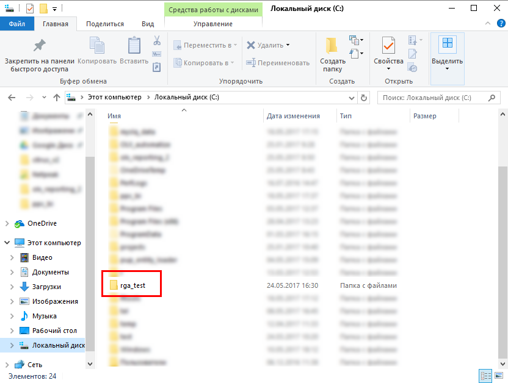
Откройте R Studio или консоль R и с помощью команды setwd ("C:/rga_test") пропишите путь к созданной папке “C:/rga_test”. Затем перейдите в рабочую папку и пройдите весь процесс аутентификации по описанию в начале статьи.
Если все прошло успешно, в вашей папке появится файл с учетными данными.
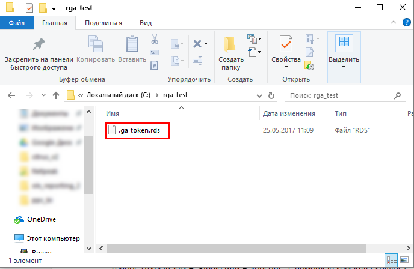
Чтобы загрузить данные из Google Analytics в Power BI с более широкими возможностями, необходимо воспользоваться коннектором «R-скрипт».
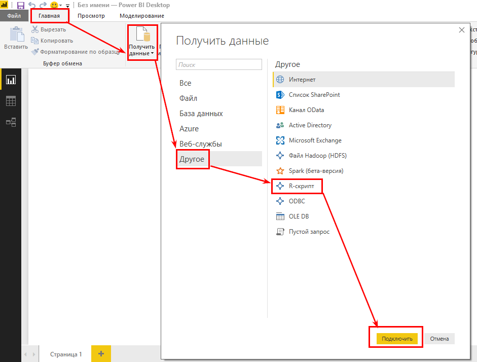
В открывшемся диалоговом окне вы увидите R-скрипт:
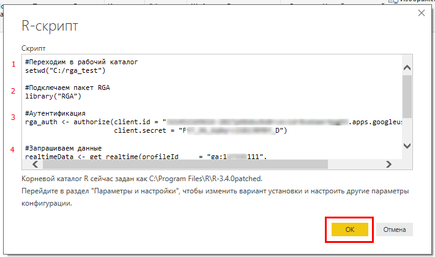
- В начале скрипта перейдите в рабочую папку, которую создали в предыдущем пункте с помощью команды
setwd("C:/rga_test"), при этом укажите путь к вашей папке. - Подключите пакет RGA с помощью команды library(“RGA”).
- Используя функцию authorize и ваши учетные данные, созданные в Google Cloud Platform, пропишите процедуру аутентификации в API Google Analytics.
- Далее напишите код запроса к одному из сервисов API Google Analytics, используя одну из функций пакета RGA для работы с API сервисами (
get_ga,get_mcf,get_realtime), и укажите все необходимые аргументы выбранной функции. - Нажмите «ОК» — начнется процесс загрузки данных, и система перенаправит вас в окно «Навигатор».
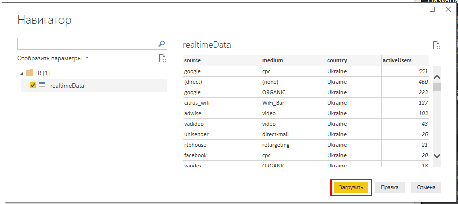
В окне «Навигатор» выделите галочкой нужную таблицу и нажмите «Загрузить».
На этом процесс интеграции между Power BI и API Google Analytics завершен. Для актуализации данных нажмите «Обновить» в интерфейсе Power BI.
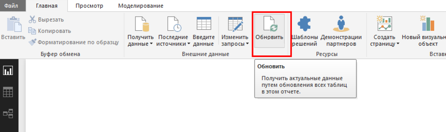
Пример дашборда, построенного в Power BI на основе данных из RealTime API Google Analytics
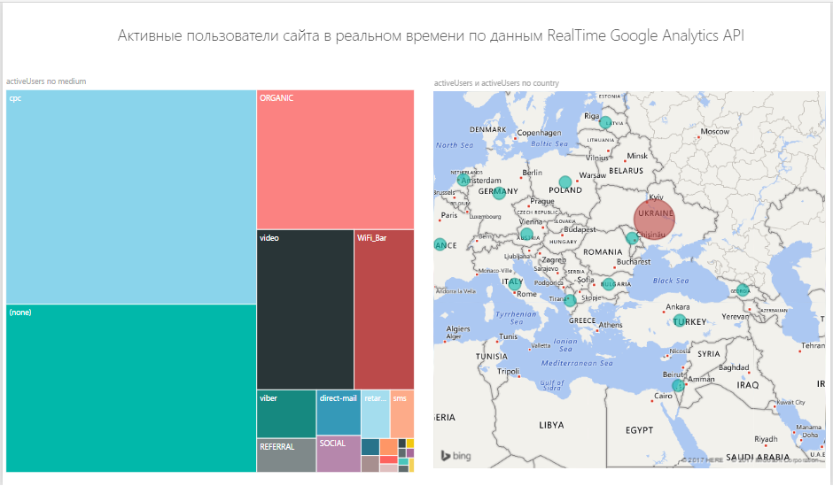
Выводы
Замечу, что не стоит воспринимать статью полным описанием или руководством к пакету RGA — в реальности его инструментарий значительно шире. Я представил вашему вниманию самый полезный и часто используемый функционал, который позволяет:
- получать данные из любого сервиса API Google Analytics для дальнейшей работы с ними в R;
- обходить семплирование данных;
- загружать данные из Google Analytics в одну из наиболее популярных BI платформ Microsoft Power BI, обойдя все ограничения и недоработки стандартного коннектора Google Analytics.